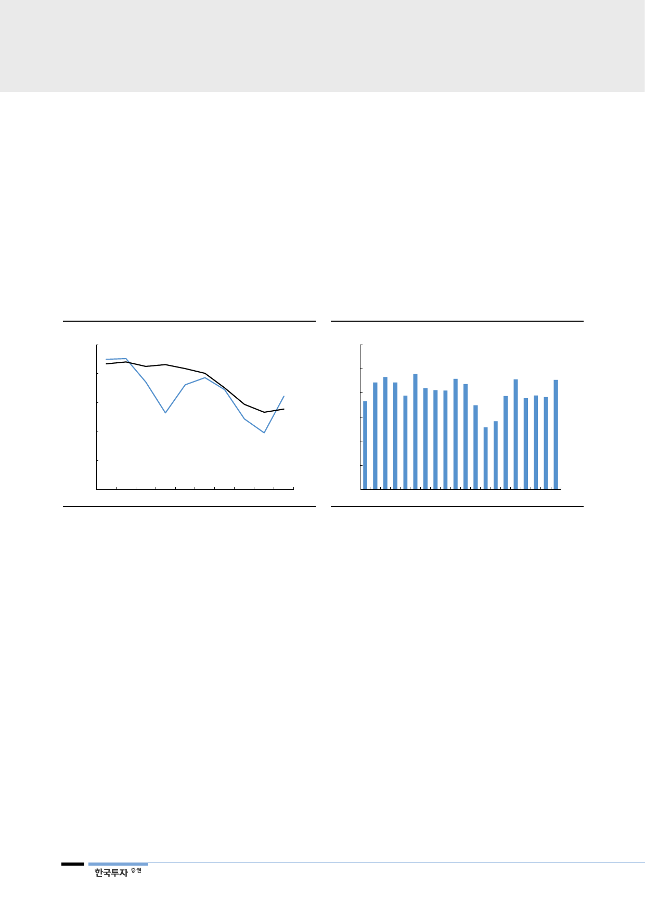

발전믹스 개선과
에너지 가격 약세
모두 긍정적
3. 실적 턴어라운드, 주가도 바닥을 통과
발전믹스의 회복으로 2019년 한전의 실적은 다시 흑자로 돌아설 전망이다. 내년
원전가동률은 82%로 올해보다 13%p 상승할 것이다. 이에 따라 민간에서 구입
할 전력량은 19% 줄어들어 2.6조원의 비용을 절감할 전망이다. 추가적인 이익
개선폭은 유가나 석탄 가격의 움직임에 달려있다. 유가가 1% 하락할 경우 한전
의 비용은 2,000억원, 석탄이 톤당 1달러 내려가면 1,200억원 줄어드는 구조다.
연료비의 60% 이상을 차지하는 석탄단가는 더 오르기보다 하향 안정화될 가능
성이 높아 보인다. 최근 유가가 가파르게 하락한 효과는 시차를 두고 LNG 가격
에 반영되어 내년 1분기부터 나타날 것이다.
[그림 56] 2019년 원전과 석탄 발전 가동률 반등 전망
(%)
100
기저발전 가동률
90
원자력
80
석탄
70
60
50
10 11 12 13 14 15 16 17 18F 19F
자료: 한국전력, 한국투자증권
[그림 57] 기저발전 발전비중 하반기 다시 증가
(%)
80
기저발전량 비중
75
70
65
60
55
50
1Q15
1Q16
자료: 한국전력, 한국투자증권
1Q17
1Q18
1Q19F
한전에 다시 관심
가져야할 시점
급진적인 탈원전 정책과 한때 50%대까지 빠졌던 원전이용률은 이례적이다. 반대
로 에너지 수급과 물가 안정의 중요성을 감안하면 이러한 불확실성이 장기화되는
것은 정부 입장에서도 부담이 된다. 우리나라도 이상적인 탈원전에 앞서 유가상
승 부담과 탄소배출량 저감 등 현실적인 고민을 외면하기 어렵다. 예방정비의 강
화와 월성 1호기 조기폐로로 단기 성과를 보여준 만큼, 이제는 원전이용률을 정
상화해 전기요금 상승압력을 낮출 차례다. 2023년까지 한전의 수익성을 뒷받침
하는 기저발전의 비중은 상승한다. 길게 보더라도 탈원전과 탈석탄까지 유예기간
이 존재하며 한전에게는 정책 변화에 대응할 시간이 주어질 것이다.
개선 방향성만으로
저평가 투자매력 충분
한국전력에 대해 ‘매수’ 의견과 목표주가 37,000원으로 분석을 재개한다. 목표주
가는 2019년 BPS 전망치에 목표 PBR 0.34배를 적용해 산출했다. 정책변화에
따른 추가적인 악재보다 2019년 실적반등을 시작으로 나타날 긍정적 변화에 초
점을 맞추기에 2019F PBR 0.25배에 불과한 한전의 주가는 충분히 안전해 보인
다. 과거 수준의 이익과 배당매력을 기대하기는 어렵지만, 4년 연속 적자를 냈던
2011년 수준의 저평가는 과도해 보인다.
28